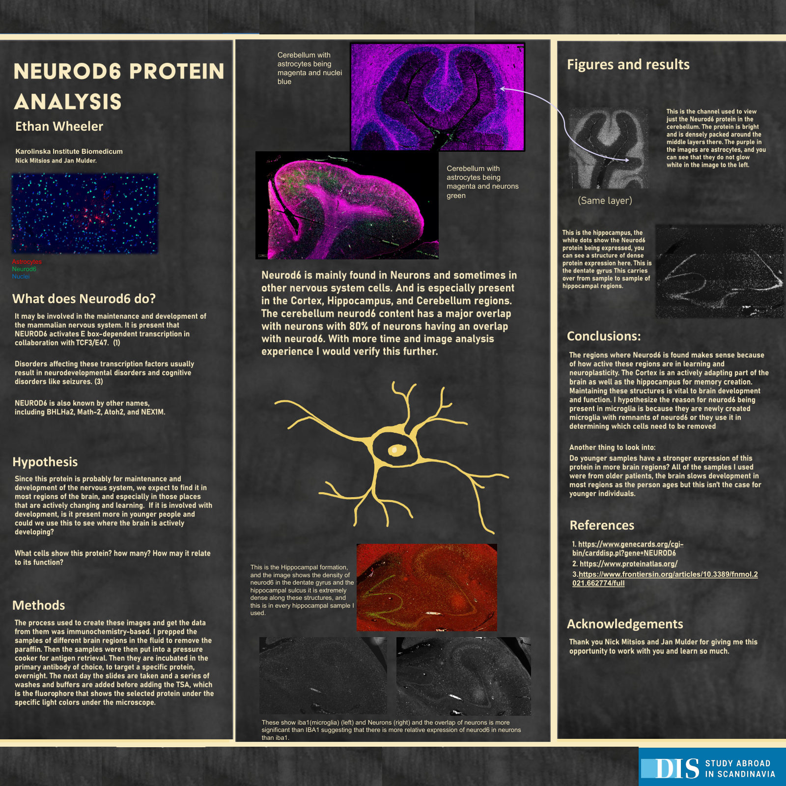
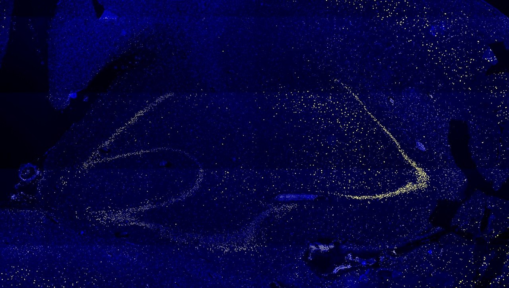
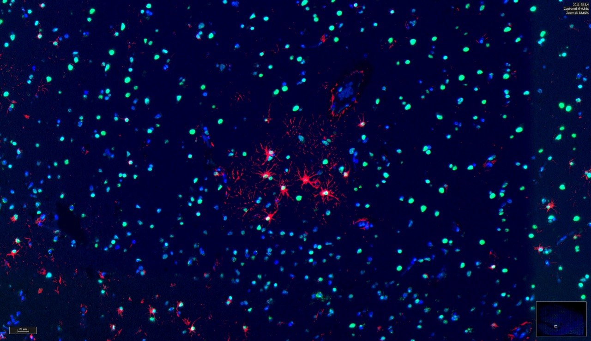
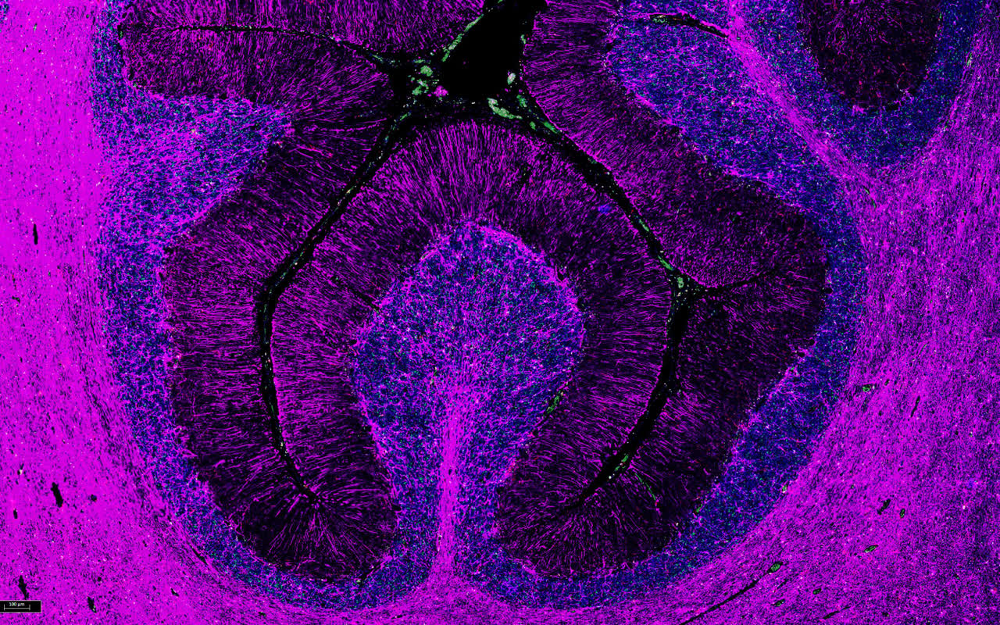
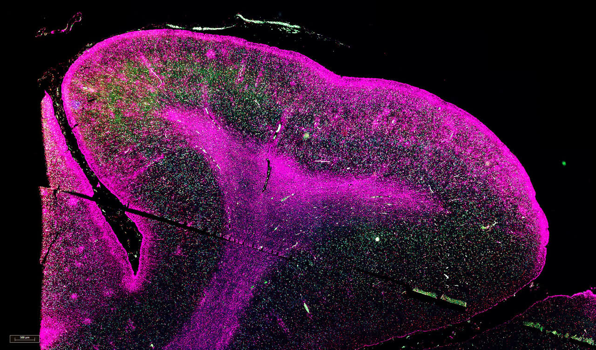

Brain Research at Karolinska
As a research assistant at Karolinska Institute in Stockholm, I used fluorescent staining on human brain tissue to map where the protein NEUROD6 shows up, and in which kinds of cells.
- Role
- Research Assistant
- Where
- Karolinska Institute Biomedicum, Stockholm
- Mentors
- Nick Mitsios and Jan Mulder
- Methods
- Immunofluorescence with TSA detection, co-staining for cell types, fluorescence slide scanning, overlap analysis
The question
NEUROD6 is a transcription factor thought to help develop and maintain the nervous system. Where in the human brain is it expressed, and in which kinds of cells?
What I did
I stained human brain tissue from the hippocampus, cortex, basal ganglia and cerebellum, running the immunofluorescence protocol from deparaffinization through antigen retrieval, overnight antibody incubation and TSA fluorescent detection. I co-stained for neurons (NeuN), astrocytes (GFAP) and microglia (Iba1), scanned the slides on a fluorescence microscope, and measured overlap between channels by thresholding each one, multiplying the images together and counting the overlapping particles.
What I found
The protein sat mostly in neurons, with the densest signal in the cortex and hippocampus and little overlap with glia. The overlap numbers shifted with small changes to the analysis settings, and every sample came from an older donor, so I proposed looking next at how expression changes with age.
Gallery



